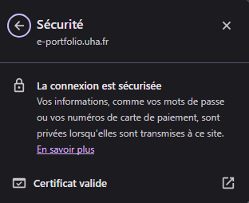
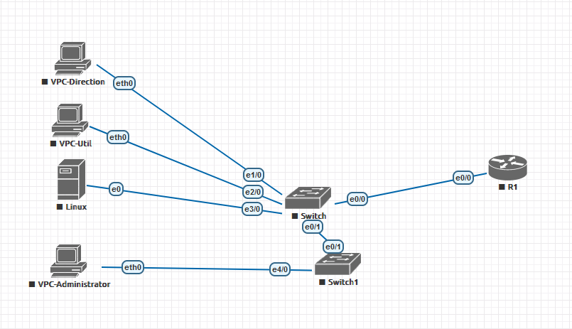
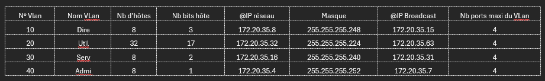

UE x.1 – Administrer les réseaux et l’Internet
Regroupe les SAE centrées sur la cybersécurité, l’hygiène informatique et la mise en place d’architectures réseau.
SAÉ1.01 – Sensibilisation à l’hygiène informatique
Compétence : Hygiène Informatique & Cybersécurité
Description
Découverte des principales menaces, bonnes pratiques et outils de vérification pour maintenir un environnement numérique sécurisé.
Preuves et traces
- Vidéo de présentation : YouTube
- Exemple de pratique : authentification d’un site HTTPS (cadenas, certificat, alertes navigateur).

Conclusion
Acquis : compréhension des menaces, réflexes d’hygiène informatique,
vérification d’authenticité des sites.
Utilité directe en R&T : participation à la sécurité des SI et des données.
SAÉ1.02 – S’initier aux réseaux informatiques
Compétence : Réseaux informatiques
Description
Mise en place d’un laboratoire virtuel EVE-NG : configuration de routeur & switch Cisco, VLANs, adressage IP.
Preuves et traces
- Capture EVE-NG : topologie + configs.

- Table des adresses IP.

Conclusion
Acquis : configuration de routeurs/commutateurs, segmentation par VLAN, prise en main d’EVE-NG pour des maquettes réseau.
SAE2.05 – Portfolio & poster d’activité
Compétence : Présentation de projet
Description
Création d’un poster + document réflexif sur un robot d’aide aux personnes à mobilité réduite (lycée).
Preuves et traces
- Poster PDF (lien) : télécharger
- Captures : robot, câblage moteurs, Raspberry Pi ↔ Arduino.

Conclusion
Acquis : programmation moteurs (Arduino), interfaçage Raspberry Pi, gestion de projet & communication technique.
SAE3.Cyber.03 – Réseau multi-sites sécurisé
Compétence : Conception d’architecture sécurisée
Page en cours de préparation …